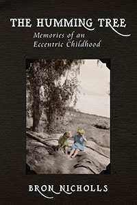
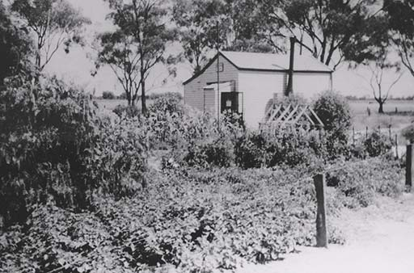
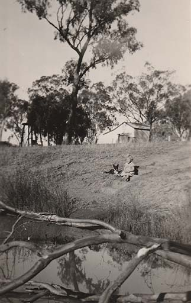

|
|


The Humming Tree : Bron Nichols

{kind=link}
The Humming Tree
Memories of an Eccentric Childhood
But there was no canopy of flowers in
mid-winter, of course.
Even the tough, dark-green, pointed leaves appeared to be
unhappy, turning brown on their edges, perhaps drought-stricken.
I closed my eyes, hugged my knees, and the little tree was
in flower again—clouds of apricot-pink blossom, the colour of sunrise,
and buzzing with thousands of wild honey-bees. I was never afraid
of the bees. They ignored me, and the dogs.
Even the tough, dark-green, pointed leaves appeared to be
unhappy, turning brown on their edges, perhaps drought-stricken.
I closed my eyes, hugged my knees, and the little tree was
in flower again—clouds of apricot-pink blossom, the colour of sunrise,
and buzzing with thousands of wild honey-bees. I was never afraid
of the bees. They ignored me, and the dogs.
The Humming Tree, Memories of an Eccentric Childhood is a captivating collection of stories about childhood. It is a companion volume to Bron Nicholl’s earlier An Imaginary Mother. Now the focus is on the father of the family, and his disturbing transition from an easy-going, jovial man, into somebody inflexible, harsh and oppressive.
The time is the decade following World-War II; the place is the flat, dry country of Northern Victoria, where John Nicholls built up a small but flourishing subsistence farm, and then abandoned it, forcing his family into another place, another life.
Writing with both a child’s viewpoint and an adult’s insight, Bron has created a series of pictures filled with finely-drawn detail, subtle colours, and life’s unavoidable deep shadows.
The Humming Tree is a biography of the rural poor. There is not a murmur of rancour. It is ‘a fortunate life’.
1 The Humming Tree
he
houses of childhood are always smaller when you return, after many
years, to visit them. The path from gate to front door is shorter by a
mile. The fences are lower. Your tree with the old tyre swing has been
cut down.
When I was thirty-six (thirty-six years ago), I drove back to the district where I’d lived between the ages of three and eight—five long, wondrous years. It was a flat land of sheep and wheat paddocks in northern Victoria, with a few remaining patches of ancient Redgum forest, and sluggish rivers—except when in flood—and endless, straight, white gravel roads.
I found the land quite as flat and dry as in my memory; the roads as straight, and corrugated, and apparently endless, but the forested places had been denuded. Even the clump of feathery, very old Peppercorn trees in front of our place had been chopped to ground level. Prickly-pear cactus plants had taken over the garden, and ruled forbiddingly on the area where a small, white timber schoolhouse used to stand. Narioka Primary School: declared obsolete when the district ran out of children. It was my first proper home.
Dad rented it for ten bob a week: a large, single room, with two blackboards on each side of a wood-burning, black iron stove. There was no electricity, no bathroom, no running water (apart from the creek across the road). But my parents, who were both artists in their own way, made the place beautiful, with pictures on the walls, rugs on the bare boards, dark blue velvet curtains dividing bedroom from living area, pottery and flowers on every shelf, and bright cushion-covers handwoven on Dad’s small loom.
When I was thirty-six (thirty-six years ago), I drove back to the district where I’d lived between the ages of three and eight—five long, wondrous years. It was a flat land of sheep and wheat paddocks in northern Victoria, with a few remaining patches of ancient Redgum forest, and sluggish rivers—except when in flood—and endless, straight, white gravel roads.
I found the land quite as flat and dry as in my memory; the roads as straight, and corrugated, and apparently endless, but the forested places had been denuded. Even the clump of feathery, very old Peppercorn trees in front of our place had been chopped to ground level. Prickly-pear cactus plants had taken over the garden, and ruled forbiddingly on the area where a small, white timber schoolhouse used to stand. Narioka Primary School: declared obsolete when the district ran out of children. It was my first proper home.
Dad rented it for ten bob a week: a large, single room, with two blackboards on each side of a wood-burning, black iron stove. There was no electricity, no bathroom, no running water (apart from the creek across the road). But my parents, who were both artists in their own way, made the place beautiful, with pictures on the walls, rugs on the bare boards, dark blue velvet curtains dividing bedroom from living area, pottery and flowers on every shelf, and bright cushion-covers handwoven on Dad’s small loom.

The Narioka schoolhouse 1947 - 1952
As I carefully stepped across the last few crumbling
floorboards I could see everything, bright and clear as if I’d only
been gone a week.
I stood in the exact spot where the big table once dominated the room. The mantle of the Tilley lamp shone like a tiny sun, reaching into every dark corner. The fire glowed red as my mother opened the stove door to add another log. A pot of vegetables, all from Dad’s garden, simmered on the hob: pumpkin, beans, cabbage, corn...
I knew that we had left nothing behind when we shifted into the town, but still I went searching, picking my way between sheets of tin, peeling weatherboard planks, bricks from the chimney, and bits of jagged glass rearing up out of the rubble like transparent shark fins.
I was looking for a relic: a patch of faded cloth, a scrap from an old newspaper, a teaspoon—anything. I began to feel curiously flat, as if made of paper, as in dreams.
To escape a cold wind—which might have blown me away—I turned towards the earthen steps leading down into the old cellar. The pit was half-full of beams and grey straw, where the roof had fallen in, but the steps were there, and solid. I went down them, slowly, counting as I used to do: one, two, three, four, five.
Dad, with a neighbour’s help, had dug this cellar out with shovels. First, a metre of sand, then a metre—a yard, back then—of yellow clay. The hole was about two-by-three metres wide. With its gabled, straw-covered roof it was a good place to hide from the heat on the worst of the summer days. The walls were lined with shelves for Mum’s bottled fruit, and jams and pickles. And spuds and pumpkins from the vegie patch. The milk, in its tall silver can, would stay cool all day. Fresh, untreated milk, of course, from a neighbour’s dairy herd.
Still hunting for something, I noticed a few empty glass jars, unbroken, amongst the straw. My mother still possessed some of those old preserving jars. She kept them in the laundry, for soaking paint-brushes. Scraping the straw back, I uncovered a tiny, perfect skeleton. A rabbit. All its delicate, pure white bones in their place; ready to collapse in a heap with one tap of a toe. I moved back.
And then, a miracle: an upright jar of quinces, with the lid still attached! The slivers of quince were brown, the sugary juice cloudy yellow, but all was intact after perhaps thirty years! I didn’t touch it, in case it exploded. The paper-thin sensation returned. I climbed out of the cellar, too fast, and nicked my wrist on a very old nail. I licked the blood away, cat-like. I wanted to see just one more place before I called it a day and drove back to my parents’ house, forty kilometres away. I had borrowed their car for this trip. A foolish idea, my mother said. You will only disturb the ghosts.
I walked around the ruins of the schoolhouse, with its fortress of Prickly-pear in the centre, until I found a small tree; a twisted, knobbly eucalypt, bent double, scraping the ground. The wind-blown branches had swept clean a square metre of hard-packed earth, and I sat down, in my old place, and looked up.
But there was no canopy of flowers in mid-winter, of course. Even the tough, dark-green, pointed leaves appeared to be unhappy, turning brown on their edges, perhaps drought-stricken.
I closed my eyes, hugged my knees, and the little tree was in flower again—clouds of apricot-pink blossom, the colour of sunrise, and buzzing with thousands of wild honey-bees. I was never afraid of the bees. They ignored me, and the dogs.
The sweet-scented branches drooped to the ground all around us, making a cave, a cubby house. It seemed that the tree itself was humming, and maybe listening as I talked to my little dog, Panda, who was black-&-white, short-haired, some kind of terrier mix—enough to make her a digger.
‘Terrier, la terre, the earth,’ explained my mother. ‘So don’t be surprised if she finds a snake hole to explore, along with those rabbit burrows.’
Panda was my only real companion. There were some imaginary friends, of course, but no actual mates, because the children in the big house across the creek were a few years older than me. And I wouldn’t have known how to play with kids my own age because I’d never been to school.
It was too far to the nearest school-bus stop, for walking, and I didn’t yet have a bicycle. Instead, I did correspondence lessons, and listened every morning to ‘The School of the Air’. My mother had taught me to read and write, so altogether everything was satisfactory and I hoped that nothing would change, for years and years...
Somehow, during the Narioka era, I learned that solitude is not loneliness—which is another way of saying that I didn’t know the meaning of loneliness. Solitude wasn’t an absence of anything, but simply an essential, everyday element, like air and water.
There were the dogs, of course, so in fact I always had company. Panda was my own special friend; I would hug her tightly, and roll in the dirt with her, until we were both covered in white dust. Big Rex was more my father’s dog—a scruffy, long-haired, skinny beast; Alsatian and Kelpie mix, at a guess. A dedicated protector. We couldn’t swim in the creek without him watching every move, ready to jump in and ‘rescue’ anyone who swam too far from the jetty.
Mum liked to swim upstream then drift back down with the current, but Rex would seldom allow her to idly drift; he had to grab the back-strap of her togs, in his jaws, and attempt to drag her to the bank. Phyllie’s laughter would ring out across the water, which only stirred Rex to greater effort.
On Christmas Day, when I was five-years and almost seven-months-old, we were down at the creek, sitting on the big fallen log which Dad had made into a jetty (enabling us to get into midstream without wading through bulrushes and duckweed).
Dad was holding Chris out over the water, so he could splash with his feet. Chris was only two-years-old, far too small to be dropped into the creek—as Dad did to me when I’d just turned five, to teach me to swim. Rex was dog-paddling, and watching our antics, as usual, with some anxiety. And then Panda, further along the bank, gave a high, excited bark.
‘She has found a rabbit,’ said Dad.
She hadn’t. Panda had found a Brown snake. That was Phyll’s guess, as the little dog limped towards us, and she was right. Dad carried Panda back to the house, where Mum actually allowed him to bring her inside and place her on the best mat.
Panda’s body shook non-stop, as if she was dreadfully cold, and my brother kept crying: ‘Fix her, Dad! Make her better, Dad!’
I couldn’t sit there, watching. I went out, around the house to the Humming Tree, and hid under the branches. The tree was in full flower. The bees had never been busier.
I stood in the exact spot where the big table once dominated the room. The mantle of the Tilley lamp shone like a tiny sun, reaching into every dark corner. The fire glowed red as my mother opened the stove door to add another log. A pot of vegetables, all from Dad’s garden, simmered on the hob: pumpkin, beans, cabbage, corn...
I knew that we had left nothing behind when we shifted into the town, but still I went searching, picking my way between sheets of tin, peeling weatherboard planks, bricks from the chimney, and bits of jagged glass rearing up out of the rubble like transparent shark fins.
I was looking for a relic: a patch of faded cloth, a scrap from an old newspaper, a teaspoon—anything. I began to feel curiously flat, as if made of paper, as in dreams.
To escape a cold wind—which might have blown me away—I turned towards the earthen steps leading down into the old cellar. The pit was half-full of beams and grey straw, where the roof had fallen in, but the steps were there, and solid. I went down them, slowly, counting as I used to do: one, two, three, four, five.
Dad, with a neighbour’s help, had dug this cellar out with shovels. First, a metre of sand, then a metre—a yard, back then—of yellow clay. The hole was about two-by-three metres wide. With its gabled, straw-covered roof it was a good place to hide from the heat on the worst of the summer days. The walls were lined with shelves for Mum’s bottled fruit, and jams and pickles. And spuds and pumpkins from the vegie patch. The milk, in its tall silver can, would stay cool all day. Fresh, untreated milk, of course, from a neighbour’s dairy herd.
Still hunting for something, I noticed a few empty glass jars, unbroken, amongst the straw. My mother still possessed some of those old preserving jars. She kept them in the laundry, for soaking paint-brushes. Scraping the straw back, I uncovered a tiny, perfect skeleton. A rabbit. All its delicate, pure white bones in their place; ready to collapse in a heap with one tap of a toe. I moved back.
And then, a miracle: an upright jar of quinces, with the lid still attached! The slivers of quince were brown, the sugary juice cloudy yellow, but all was intact after perhaps thirty years! I didn’t touch it, in case it exploded. The paper-thin sensation returned. I climbed out of the cellar, too fast, and nicked my wrist on a very old nail. I licked the blood away, cat-like. I wanted to see just one more place before I called it a day and drove back to my parents’ house, forty kilometres away. I had borrowed their car for this trip. A foolish idea, my mother said. You will only disturb the ghosts.
I walked around the ruins of the schoolhouse, with its fortress of Prickly-pear in the centre, until I found a small tree; a twisted, knobbly eucalypt, bent double, scraping the ground. The wind-blown branches had swept clean a square metre of hard-packed earth, and I sat down, in my old place, and looked up.
But there was no canopy of flowers in mid-winter, of course. Even the tough, dark-green, pointed leaves appeared to be unhappy, turning brown on their edges, perhaps drought-stricken.
I closed my eyes, hugged my knees, and the little tree was in flower again—clouds of apricot-pink blossom, the colour of sunrise, and buzzing with thousands of wild honey-bees. I was never afraid of the bees. They ignored me, and the dogs.
The sweet-scented branches drooped to the ground all around us, making a cave, a cubby house. It seemed that the tree itself was humming, and maybe listening as I talked to my little dog, Panda, who was black-&-white, short-haired, some kind of terrier mix—enough to make her a digger.
‘Terrier, la terre, the earth,’ explained my mother. ‘So don’t be surprised if she finds a snake hole to explore, along with those rabbit burrows.’
Panda was my only real companion. There were some imaginary friends, of course, but no actual mates, because the children in the big house across the creek were a few years older than me. And I wouldn’t have known how to play with kids my own age because I’d never been to school.
It was too far to the nearest school-bus stop, for walking, and I didn’t yet have a bicycle. Instead, I did correspondence lessons, and listened every morning to ‘The School of the Air’. My mother had taught me to read and write, so altogether everything was satisfactory and I hoped that nothing would change, for years and years...
Somehow, during the Narioka era, I learned that solitude is not loneliness—which is another way of saying that I didn’t know the meaning of loneliness. Solitude wasn’t an absence of anything, but simply an essential, everyday element, like air and water.
There were the dogs, of course, so in fact I always had company. Panda was my own special friend; I would hug her tightly, and roll in the dirt with her, until we were both covered in white dust. Big Rex was more my father’s dog—a scruffy, long-haired, skinny beast; Alsatian and Kelpie mix, at a guess. A dedicated protector. We couldn’t swim in the creek without him watching every move, ready to jump in and ‘rescue’ anyone who swam too far from the jetty.
Mum liked to swim upstream then drift back down with the current, but Rex would seldom allow her to idly drift; he had to grab the back-strap of her togs, in his jaws, and attempt to drag her to the bank. Phyllie’s laughter would ring out across the water, which only stirred Rex to greater effort.
On Christmas Day, when I was five-years and almost seven-months-old, we were down at the creek, sitting on the big fallen log which Dad had made into a jetty (enabling us to get into midstream without wading through bulrushes and duckweed).
Dad was holding Chris out over the water, so he could splash with his feet. Chris was only two-years-old, far too small to be dropped into the creek—as Dad did to me when I’d just turned five, to teach me to swim. Rex was dog-paddling, and watching our antics, as usual, with some anxiety. And then Panda, further along the bank, gave a high, excited bark.
‘She has found a rabbit,’ said Dad.
She hadn’t. Panda had found a Brown snake. That was Phyll’s guess, as the little dog limped towards us, and she was right. Dad carried Panda back to the house, where Mum actually allowed him to bring her inside and place her on the best mat.
Panda’s body shook non-stop, as if she was dreadfully cold, and my brother kept crying: ‘Fix her, Dad! Make her better, Dad!’
I couldn’t sit there, watching. I went out, around the house to the Humming Tree, and hid under the branches. The tree was in full flower. The bees had never been busier.

Bron at Narioka
Some
hours later—quite late in the day—Mum came looking for me. ‘Panda has
died,’ she said, matter-of-factly. ‘Dad is digging a grave on the creek
bank, where she liked to sit and watch us swim. Funny little dog—she
never did like swimming. Not like Rex.’ She grasped my hand. ‘Come on
out, now. Be brave.’
She practically had to drag me from my hiding-place. As we walked through the garden she picked two huge dahlia flowers, golden-red, and gave one to me.
At the graveside I concentrated on the overlapping petals, their perfect spiral arrangement. I couldn’t look again at my little dog, and when Dad began to shovel the sand on top of her, I ran up the bank, across the road, crying all the way, and still clutching the dahlia head.
‘Wait!’ Mum called out. ‘That flower is for Panda!’
I already had my suspicions about Time. Panda’s death confirmed it: Time is a trickster. Your world may feel solid, unbreakable, in the morning light; by sundown all things, including the thoughts in your head, may be scattered into a thousand fragments—like the petals of the dahlia, which I tore apart and dropped amongst the fallen blossom under the Humming Tree.
Sitting there on the same patch of ground, thirty years on, I thought about the way childhood’s best memories had lasted in a vague, soft, water-coloured sort of way, but the world-shattering recollections were all in sharp black-&-white, like woodcuts by Dürer.
A very light rain had begun to fall on the dry ground outside my hiding-place. There was a scent of dust. As I belatedly inspected the small wound on my wrist (which was quite nasty, and really, I ought to get home and put antiseptic on it), a strange thought occurred to me. Half-thought, half-feeling. I clambered to my feet, held my face up to the sweet rain, and spoke aloud, in my mother’s voice:
‘You still feel guilty, don’t you, for not dropping that lovely dahlia into Panda’s grave.’
She practically had to drag me from my hiding-place. As we walked through the garden she picked two huge dahlia flowers, golden-red, and gave one to me.
At the graveside I concentrated on the overlapping petals, their perfect spiral arrangement. I couldn’t look again at my little dog, and when Dad began to shovel the sand on top of her, I ran up the bank, across the road, crying all the way, and still clutching the dahlia head.
‘Wait!’ Mum called out. ‘That flower is for Panda!’
I already had my suspicions about Time. Panda’s death confirmed it: Time is a trickster. Your world may feel solid, unbreakable, in the morning light; by sundown all things, including the thoughts in your head, may be scattered into a thousand fragments—like the petals of the dahlia, which I tore apart and dropped amongst the fallen blossom under the Humming Tree.
Sitting there on the same patch of ground, thirty years on, I thought about the way childhood’s best memories had lasted in a vague, soft, water-coloured sort of way, but the world-shattering recollections were all in sharp black-&-white, like woodcuts by Dürer.
A very light rain had begun to fall on the dry ground outside my hiding-place. There was a scent of dust. As I belatedly inspected the small wound on my wrist (which was quite nasty, and really, I ought to get home and put antiseptic on it), a strange thought occurred to me. Half-thought, half-feeling. I clambered to my feet, held my face up to the sweet rain, and spoke aloud, in my mother’s voice:
‘You still feel guilty, don’t you, for not dropping that lovely dahlia into Panda’s grave.’